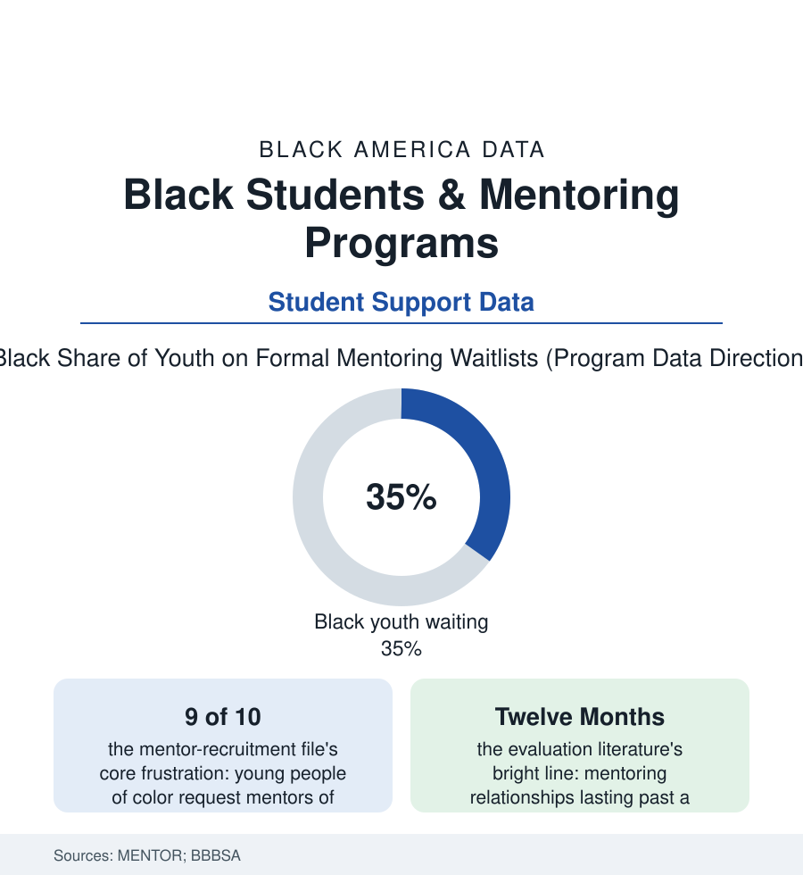

Black Education
The Matched Adult: Mentoring and the 8.5 Million Young People Waiting for One
Formal mentoring is among the most-studied interventions in youth research — and the mentor gap falls, as most gaps do, on Black boys first. The mentoring file.

Somewhere in the research literature on every problem in this section sits the same quiet variable: whether a young person has one more adult. Formal mentoring — the matched, program-supervised version — is its industrial form, studied more rigorously than almost any youth intervention, and its central statistic is a shortage: millions of young people the national partnership counts as wanting a mentor, with Black youth, and Black boys above all, waiting longest on the lists. This article reads the mentoring file.
What the Evidence Actually Says
Mentoring's research base is unusually honest about its own effect sizes, and the file should honor the precision: the meta-analyses find real but modest average gains — school engagement, behavior, and aspirations improving on the order the program officers call 'small but consistent' — concentrated where the programs do the unglamorous things well (the screened and trained mentor, the supervised match, the match that lasts). The flagship randomized evaluations (Big Brothers Big Sisters' school and community trials of the research canon) recorded the pattern behind the averages: the mentored students likelier to attend, to behave, to expect college — and the relationships that ended within months correlating with outcomes worse than never matching, a finding that converted duration from a metric into the field's moral center. The informal side dwarfs the formal in the survey data and matters to the atlas's whole argument: the natural mentors (the coach, the pastor, the aunt of the kinship file, the teacher of the school file) whom the youth surveys find in roughly half of adolescents' lives, their presence predicting resilience in the longitudinal data at strengths the programs envy — and their absence, the 'mentoring gap' of the partnership's foundational report, counted at some sixteen million young people who had no mentor of any kind at the report's writing, the gap's distribution running along the atlas's standard coordinates. The school-based models (the Check & Connect and peer programs of the dropout-prevention literature, the My Brother's Keeper era's school-mentor initiatives) attempted the industrial solution — converting the adults already inside the building into the matched adult — their evaluations now part of the base the file stands on.
The Matching Problem
The waitlist's composition is the file's second lesson, because it is a supply story wearing a demand story's clothes: the young people are registered, screened, and waiting in numbers the programs publish; the volunteers arrive in different demographics than the requests (the mentor pool in the national data skewing older, whiter, and more female than the boys who constitute the waitlist's core — the matching queue's mathematics producing the Black boy's year-long wait from the simple arithmetic of who signs up). Race-matching itself is the research's nuanced corner: the studies find same-race matching mattering modestly to relationship longevity and cultural trust, and mattering greatly to the young person's request — the programs caught between the evidence's shrug and the child's explicit ask, the better ones answering with recruitment aimed where the ask comes from (the fraternities and professional associations of the business file's networks, the church men's ministries of the clergy file, the barbershop partnerships — the mentor-recruitment innovations that read the community's own institutions as the volunteer pool, because they are). The newer models extend the definition productively in the data: the group and team formats multiplying the matched adult's reach, the workplace mentors of the career-academy file, the near-peer mentors (the college student of the pipeline file) whose matches, in the evaluations, run surprisingly strong for the adolescent mentee — the ladder mentoring its own next rung. And beneath the programs sits the file's closing recognition: every other article in this section describes a system; this one describes a relationship, and its data keep showing that the relationship — reliable, long, and chosen — is itself a measurable input, as real in the regressions as funding per pupil.
Reading the Mentoring Data
The waitlist is the mentoring file's census: children counted not by what they lack in talent or will but by the adults unrecruited on the other side of the match. The programs publish their queues. The community that fills them — barbershop by barbershop, chapter by chapter — is writing its own enrollment data, one matched adult at a time.
More in Black Education
Black Educational Attainment: High School Parity, the College Gap
About 89 percent of Black adults hold a high school diploma and one in four holds a bachelor's degree or higher — the attainment ladder, the college completion gap, and the generational trend.
Historically Black Colleges and Universities: Enrollment and Degrees
More than 100 HBCUs enroll roughly 290,000 students and award about one in six Black bachelor's degrees — an outsized share from a small sector. The federal education data.
Black College Enrollment: 2.4 Million Students
About 2.4 million Black students are enrolled in American colleges — nearly two-thirds of them women. The NCES enrollment data by sector, level, and trend.
Source: MENTOR: The National Mentoring Partnership research; Big Brothers Big Sisters of America impact studies; National Mentoring Resource Center; U.S. Department of Education mentoring evaluations.